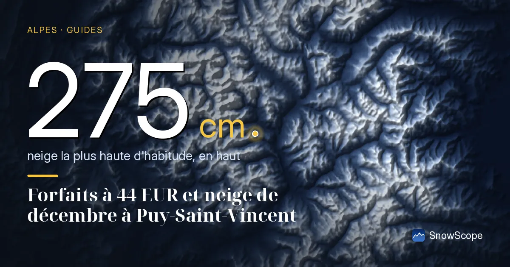

Forfaits à 44 EUR et neige de décembre à Puy-Saint-Vincent
Avec un forfait adulte 1 jour à 44 EUR, Puy-Saint-Vincent est une option économique pour skier en décembre dans les Écrins. Bien que la base à 1 411 m soit souvent peu enneigée en début de saison, notre historique de neige montre une couverture fiable dès le milieu du domaine. Voici comment il se compare à Serre Chevalier.
Consultez les prévisions neige en temps réel pour Puy-Saint-Vincent sur l'application SnowScopeHauteurs de neige, alertes poudreuse et carte 3D, gratuitement.
Un forfait à 44 EUR sur une montagne compacte
Pour l'hiver 2026-27, le site officiel de Puy-Saint-Vincent propose le forfait adulte 1 jour à 44 EUR. Cela couvre un domaine skiable de 42 km de pistes et 12 remontées mécaniques, s'étendant de 1 411 m à 2 664 m pour un dénivelé de 1 253 m.
La taille compacte du domaine rend les courts séjours de décembre simples et abordables. La vraie question est de savoir comment la neige naturelle se maintient à chaque altitude avant janvier.

Trois altitudes, trois histoires de neige en décembre
Au pied des pistes (1 411 m), la neige en décembre est souvent limitée. Dans notre historique de 46 hivers (1980-81 à 2025-26), l'épaisseur habituelle en décembre est de 19 cm, descendant sous 5 cm 1 hiver sur 10 et dépassant 39 cm 1 hiver sur 10.
Plus haut, la neige s'accumule vite. À mi-montagne (2 037 m), on compte en moyenne 55 cm en décembre, avec 1 hiver sur 10 sous 21 cm et 1 hiver sur 10 au-dessus de 96 cm. Au sommet (2 664 m), le mois de décembre atteint habituellement 106 cm (44 cm en année faible, 185 cm en année riche).
Quelles semaines de décembre sont les plus enneigées
Les chiffres semaine par semaine indiquent quand réserver. À la base (1 411 m), 30 cm ou plus sont présents dans 15 % des hivers passés entre le 1er et le 7 décembre, 20 % entre le 8 et le 14, 28 % entre le 15 et le 21, et 33 % entre le 22 et le 28 décembre, tandis que 50 cm ou plus apparaissent seulement dans 0 %, 2 %, 7 % et 9 % des cas.
À mi-montagne (2 037 m), 30 cm ou plus sont présents dans 61 % des hivers passés entre le 1er et le 7 décembre, montant à 76 %, 89 % et 93 % les trois semaines suivantes, tandis que 50 cm ou plus passent de 35 % et 46 % à 54 % entre le 15 et le 21 décembre et 70 % entre le 22 et le 28 décembre. Au sommet (2 664 m), 30 cm ou plus atteignent 98 % entre le 1er et le 7 décembre et 100 % ensuite, avec 50 cm ou plus à 74 %, 85 %, 93 % et 96 %.
Face au grand voisin Serre Chevalier
Serre Chevalier est beaucoup plus grand, avec 157 km de pistes et 70 remontées de 1 219 m à 2 765 m (dénivelé de 1 546 m). Le site officiel affiche un forfait 6 jours adulte à 276,00 EUR jusqu'au 18 décembre 2026 et 345,00 EUR du 19 décembre 2026 au 1er janvier 2027. Puy-Saint-Vincent propose ici un forfait 1 jour à 44 EUR, idéal pour les courts séjours.
Dans notre historique, Serre Chevalier a plus de neige à la base (1 219 m), avec 30 cm en moyenne en décembre (8 cm en année faible, 59 cm en année riche) et 30 cm ou plus dans 30 %, 41 %, 52 % et 67 % des hivers. Plus haut, les deux sont proches : Serre Chevalier affiche 58 cm à mi-montagne (1 992 m ; 24 cm en année faible, 103 cm en année riche) et 111 cm au sommet (2 765 m ; 50 cm en année faible, 192 cm en année riche), atteignant 30 cm ou plus dans 65 %, 83 %, 93 % et 96 % des hivers à mi-montagne et 50 cm ou plus dans 78 %, 87 %, 96 % et 96 % au sommet.
Première neige, tendances et signes précoces
L'hiver dernier (2025-26) a connu une moyenne de décembre modeste à Puy-Saint-Vincent : 12 cm à la base, 42 cm à mi-montagne et 91 cm au sommet. La première neige durable arrive habituellement le 30 octobre à la base, le 26 octobre à mi-montagne et le 13 octobre au sommet. En comparant les 15 premiers hivers (1980-81 à 1994-95) aux 15 derniers (2011-12 à 2025-26), les moyennes de décembre sont passées de 13 cm à 23 cm à la base, de 42 cm à 60 cm à mi-montagne, et de 87 cm à 114 cm au sommet. Les extrêmes bas ont touché 0 cm à la base en 1998-99 (13 cm mi-montagne, 38 cm sommet en 2015-16), tandis que 1996-97 a atteint 52 cm, 114 cm et 199 cm.
Pour donner une idée du début de saison, l'estimation actuelle au 13 novembre 2026 est de 0 cm à la base et à mi-montagne, et 11 cm au sommet, avec une prévision de 0 cm, 37 cm et 70 cm de neige fraîche dans les sept prochains jours. Pour la période du 13 au 26 novembre 2026, les perspectives à deux semaines à mi-montagne et au-dessus donnent une fourchette de 69 cm à 108 cm (89 cm en moyenne).
Conseils aux skieurs
- Visez la période du 15-21 décembre ou du 22-28 décembre, où la probabilité d'avoir 50 cm ou plus à mi-montagne (2 037 m) passe à 54 % et 70 % des hivers passés.
- Skiez principalement entre mi-montagne (2 037 m) et le sommet (2 664 m), car la base à 1 411 m a une moyenne de 19 cm.
- Consultez la nivologie avant de sortir des pistes, surtout en altitude où la neige de décembre atteint 106 cm.
- Réservez le forfait 1 jour à 44 EUR sur le site officiel de Puy-Saint-Vincent, ou comparez avec le forfait 6 jours début de saison de Serre Chevalier à 276,00 EUR.
Autres cartes (sites externes)
Références et crédits
- Puy-Saint-Vincent, official ski pass prices 2026-27 www.puysaintvincent.com/forfait-ski-puy-saint-vincent
- Serre Chevalier, official booking site, ski passes 2026-27 reservation.serre-chevalier.com/achetez-vos-ski-pass-serre-chevalier-et-autres-prestations.html
- SnowScope, December snow at three heights and today's snow map snowscope.app/
À propos de ces chiffres
Chiffres de neige : historique SnowScope, 46 hivers passés (1980-81 à 2025-26) à trois altitudes de chaque station (un modèle du passé corrigé de l'altitude : une estimation pour une zone, pas des mesures de la station) ; chiffres de décembre calculés à partir des hauteurs quotidiennes de ces hivers. Neige actuelle et tendance à deux semaines : prévisions SnowScope (tendance ECMWF et GFS, une fourchette, pas une promesse). Remontées et pistes : cartographie OpenSkiMap. Prix : pages officielles des stations ci-dessous, lues le 2026-11-13 ; les prix peuvent changer, vérifiez avant de réserver.
Bulletins d'avalanche officiels: Météo-France – Bulletin d'estimation du risque d'avalanche
Citer ce bulletin
Pour la recherche, l'enseignement ou la presse : chiffres et graphiques réutilisables librement sous CC BY 4.0 avec cette citation.
SnowScope (2026), Forfaits à 44 EUR et neige de décembre à Puy-Saint-Vincent, https://snowscope.app/blog/fr/2026/11/puy-saint-vincent-december-ski-cheap-pass-snow-2026.html, consulté le 2026-11-14
SnowScope (Atlas Labs). (2026, November 14). Forfaits à 44 EUR et neige de décembre à Puy-Saint-Vincent. SnowScope snow reports. https://snowscope.app/blog/fr/2026/11/puy-saint-vincent-december-ski-cheap-pass-snow-2026.html
BibTeX
@misc{snowscope2026puysaintvincentdecembers,
author = {{SnowScope (Atlas Labs)}},
title = {Forfaits à 44 EUR et neige de décembre à Puy-Saint-Vincent},
year = {2026},
month = nov,
howpublished = {\url{https://snowscope.app/blog/fr/2026/11/puy-saint-vincent-december-ski-cheap-pass-snow-2026.html}},
note = {Published 2026-11-14 14:11 UTC; accessed 2026-11-14}
}· CC BY 4.0 · Méthodes, données et outils →
Puy-Saint-Vincent : neige et température selon l'altitude, cet hiver vs l'hiver dernier (outils) →
Suivre Puy-Saint-Vincent
Gratuit : un message quand la neige arrive, et la météo chaque matin.